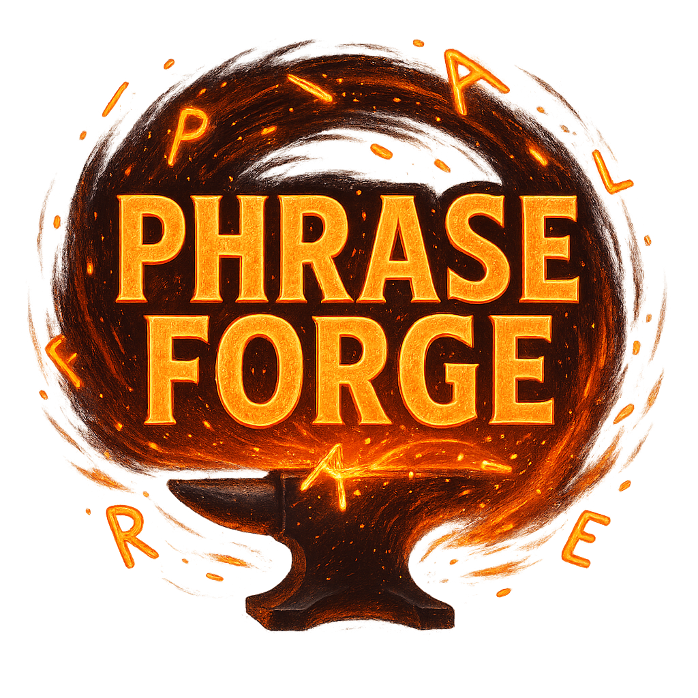
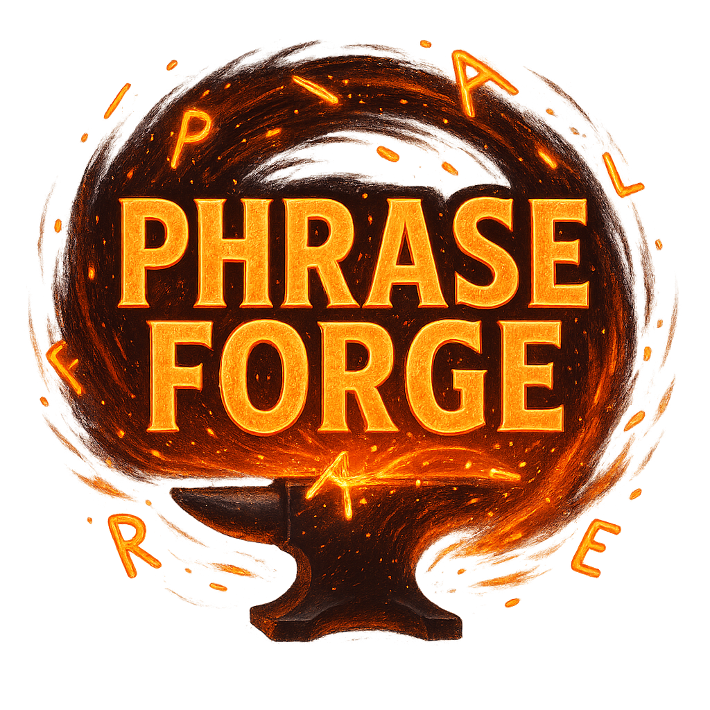

Sentence Transformations
For the following questions, complete the second sentence so that it has a similar meaning to the first sentence, using the word given.
Do not change the word given. You must use between three and eight words, including the word given.
Here is an example.
Example: Do you mind if I watch you while you paint?
Word Given: objection
Do you you while you paint?
0 words
Score: 0 | Exercises Completed: 0 / 0
Online Dictionary Lookup
Type a word to search an external dictionary (e.g., Merriam-Webster).